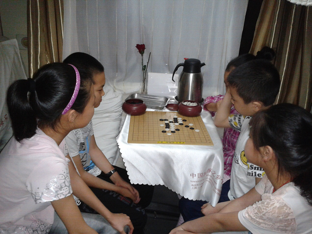
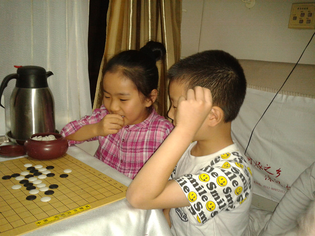
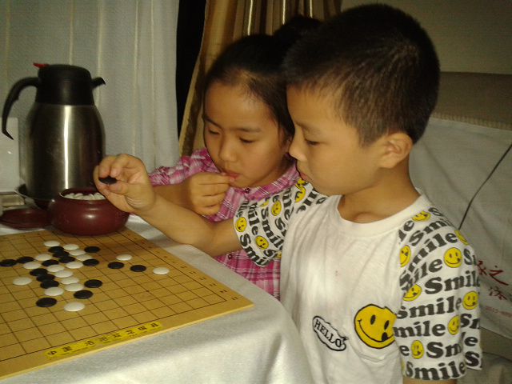
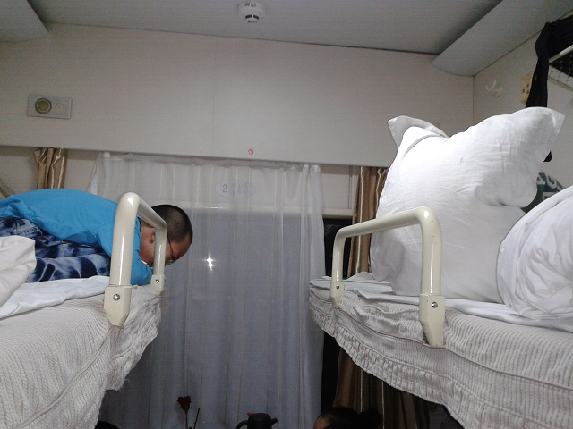

2012全少赛回忆录之二一路北上
#1 2012全少赛回忆录之二一路北上 作者：黄药师 发表时间：2012-7-25 14:09:01
比赛的时间是7月16日，但是在路上需要差不多一天的时间，因此我们出发的时间定在7月14日。买火车票是最麻烦的事情，需要考虑多方面的因素，由于没有直达秦皇岛的列车，因此转车不可避免。首先就是选择合适的线路，尽量减少转车次数，因为火车站里面人流量太大，容易造成人员走丢的现象。其次是买的票要尽量在同一车厢内，还要尽量在同一房间里面，这样便于照应。实际买车票是一波三折，好在最后如愿买到车票。
然后就是分组，这里的分组即有乘火车车厢分组，也有在宾馆的房间分组，还有在路上的分组，需要考虑的因素很多，毕竟这是一个40个人的庞大队伍。在这时候，我们四个教练也进行了相应的分工，有负责后勤的，有负责协调的，有负责技术指导的……
7月14日，18时50分，我们乘坐南通到北京的列车，出发了，孩子激动，兴奋的，教练们是谨慎、警惕的。在车上安顿好所有学生休息后，我们教练组成员又巡视了一番，一夜无话。经过12小时，到了15日早晨7时20分左右，我们顺利达到北京火车站，一下火车站，我们几个教练警惕度提到最高，到过北京站的人都知道，北京站的人流量是惊人的，密密麻麻的全是人。我们按照既定计划分组，每组都有一个教练带队，几乎是走几步就要回头看看学生在不在跟着后面。 终于带着全部学生坐上了从北京开往秦皇岛的大巴。
长路漫漫，下联棋打发时间吧！



楼上还有观战的！

［此帖子已被 黄药师 在 2012-7-25 14:10:15 编辑过］
［ 梧桐风 于 2012-7-25 14:52:44 时花20金币送鲜花一朵］
［ 梧桐风 于 2012-7-25 14:52:44 时花20金币送鲜花一朵］
［ 梧桐风 于 2012-7-25 14:52:44 时花20金币送鲜花一朵］
［ 梧桐风 于 2012-7-25 14:52:44 时花20金币送鲜花一朵］
［ 梧桐风 于 2012-7-25 14:52:44 时花20金币送鲜花一朵］
［ 梧桐风 于 2012-7-25 14:52:44 时花20金币送鲜花一朵］
［ 梧桐风 于 2012-7-25 14:52:44 时花20金币送鲜花一朵］
［ 梧桐风 于 2012-7-25 14:52:44 时花20金币送鲜花一朵］
［ 梧桐风 于 2012-7-25 14:52:44 时花20金币送鲜花一朵］
［ 山东星月皎璨 于 2012-7-25 17:05:13 时花20金币送鲜花一朵］
#2 Re:2012全少赛回忆录之二一路北上 作者：梧桐风 发表时间：2012-7-25 14:54:44
人生路漫漫，白鹭长相伴。。。。［此帖子已被 梧桐风 在 2012-7-25 14:55:21 编辑过］
#3 Re:2012全少赛回忆录之二一路北上 作者：伊依 发表时间：2012-7-25 15:49:23
真不容易，带这么多孩子出去比赛，你们胆子可真够大的，这是多大的责任啊。表示对你们无比的敬佩！！！#4 Re:2012全少赛回忆录之二一路北上 作者：灯塔连珠 发表时间：2012-7-25 17:00:48
南通这些年在幼儿五子棋的教育上，非常成功，值得学习！顺便问一下，南通是哪个省的呀？#5 Re:2012全少赛回忆录之二一路北上 作者：黄药师 发表时间：2012-7-25 21:21:22
http://baike.baidu.com/view/1225.htm
［ 紫雪晶莹 于 2012-7-25 21:46:13 时花20金币送鲜花一朵］